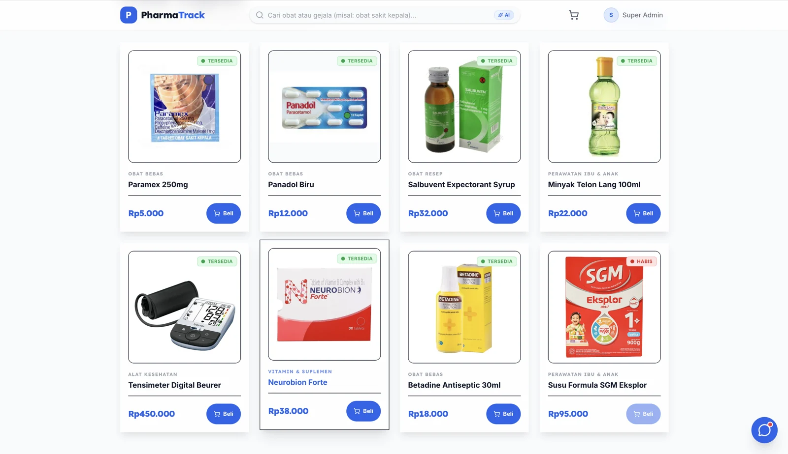
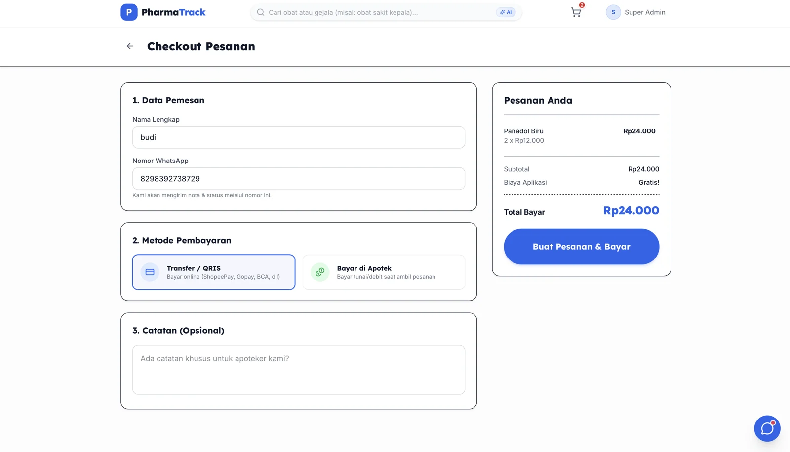
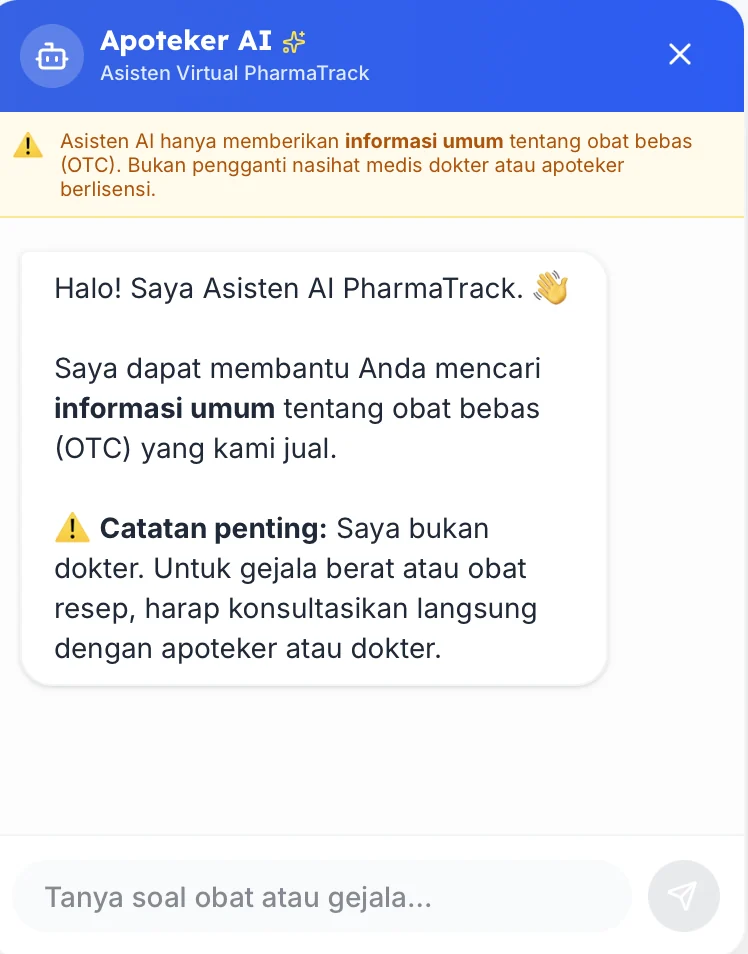
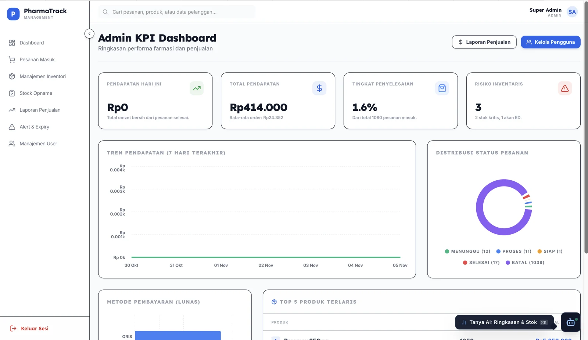

Pharmacists kept struggling to see which medicines were about to expire. So we built them a system to track it, and while we were at it, a shop where customers can order the medicine too.
The pharmacists' real headache was simple: it was hard to see which medicines were close to expiring. Stock that expires on the shelf is money thrown away.
So the admin side came first: stock, expiry alerts and stock opname in one place. Once all the stock data lived in one system, adding a shop on top made sense. Customers search, order online, then pick up and pay at the pharmacy.
/produk

Catalog with live stock status: available or sold out.
/checkout

Checkout: pay by transfer/QRIS or at the pharmacy on pickup.
Ordering in four steps: search, order online, pick up, pay at the cashier.

Apoteker AI
A built-in assistant answers general questions about over-the-counter medicines sold in the store. It clearly states it is not a doctor and points users to a licensed pharmacist for serious symptoms or prescription drugs.
I started by studying how a pharmacy actually runs day to day, then turned that into the feature list. From there I drew the wireframes and prototypes in Figma, and later helped test the app and write the documentation.
se-group5.vercel.app/admin

Admin KPI dashboard: revenue, completion rate, inventory risk (critical stock and near-expiry), order status and top products, with an AI summary shortcut.